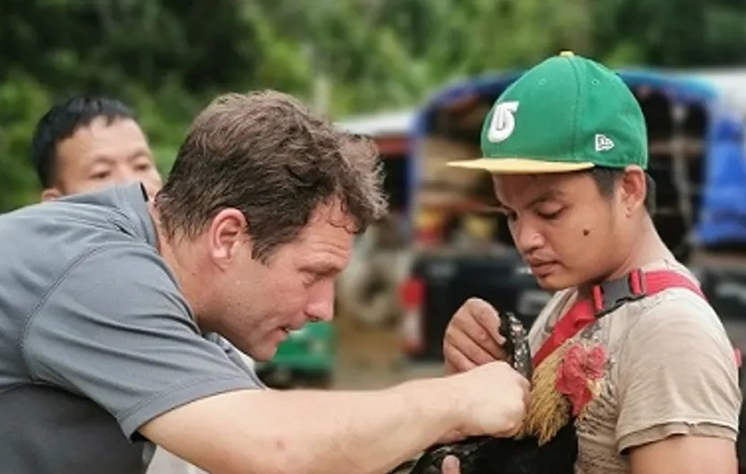
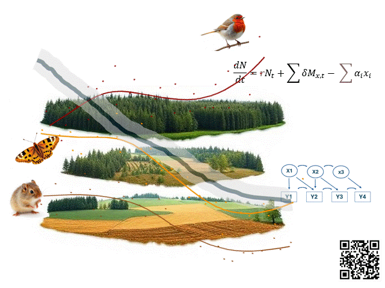
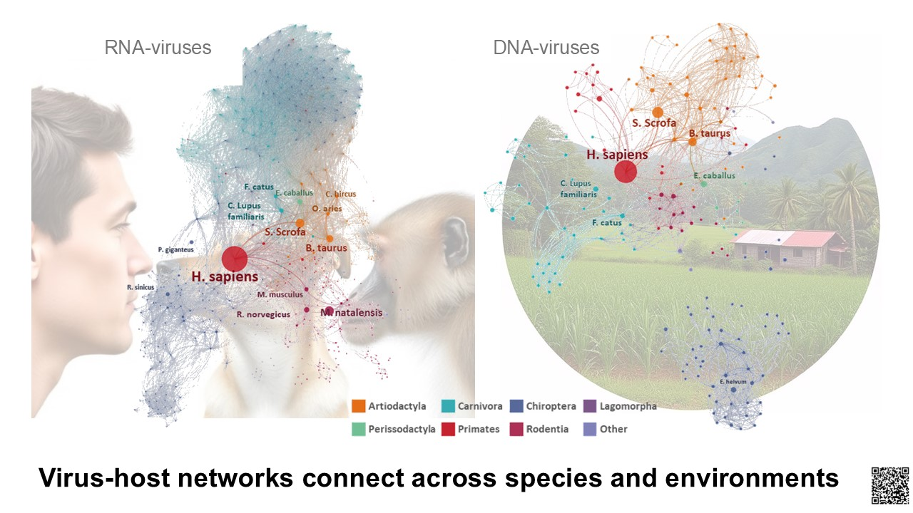
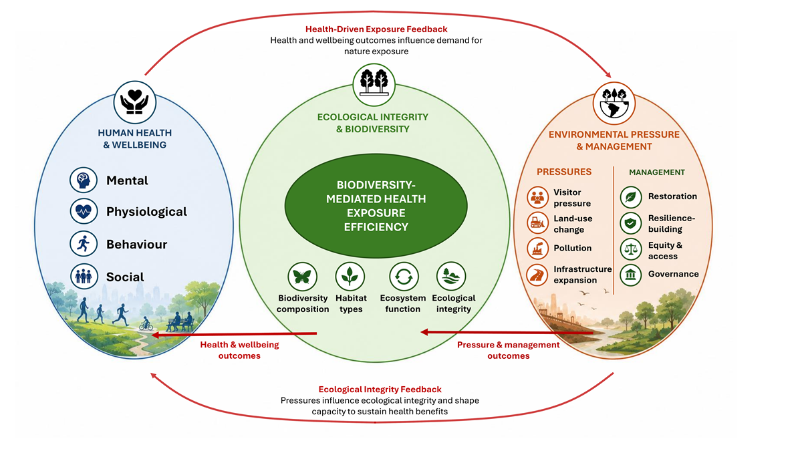

Research
Research
BAHE investigates how interactions among organisms, environments and people shape biodiversity, wildlife health, ecosystem functioning and sustainable futures.
We combine ecological observation, field and molecular approaches, quantitative modelling and interdisciplinary synthesis to understand ecological change across biological and socioecological systems.

Research programmes
Biodiversity under global change
We study how species, communities and ecosystems respond to land-use change, fragmentation, urbanisation, restoration and conservation intervention.
Wildlife ecology, health and One Health
We investigate wildlife populations, host–parasite systems, microbiomes and disease processes in their ecological and environmental contexts.
Ecological interactions and system dynamics
We examine how colonisation, priority effects, ecological networks and environmental feedbacks shape community assembly and change through time.
Nature, wellbeing and sustainable futures
We explore how ecological integrity, biodiversity and environmental pressures influence human wellbeing within coupled socioecological systems.
Biodiversity under global change
We study how biodiversity responds to environmental change across landscapes and through time. Our work examines the consequences of land-use change, habitat fragmentation, urbanisation, protected-area management, renewable-energy infrastructure, restoration and conservation intervention.
Example questions
- How do species and ecological communities respond to changing landscapes?
- Which processes determine persistence, turnover, recovery and resilience?
- How can monitoring distinguish short-term variation from directional change?
- Which conservation and restoration actions produce durable ecological benefits?

Wildlife ecology, health and One Health
We investigate wildlife populations, host–parasite interactions, microbiomes and disease processes within their ecological and environmental contexts. This research links biodiversity science with One Health by examining how changes in habitats, communities and ecological interactions affect wildlife health, pathogen dynamics and potential risks to people.
Example questions
- How does host-community structure influence parasite and pathogen dynamics?
- How do land-use change and habitat disturbance affect wildlife health?
- How do parasites, microbiomes and host traits interact?
- How can ecological evidence strengthen One Health surveillance and conservation?

Ecological interactions and system dynamics
Ecological systems are shaped by interactions that unfold across space and time. We study how colonisation, priority effects, succession, ecological networks, species associations and environmental feedbacks influence community assembly and ecosystem dynamics.
Our work combines empirical research, simulation and statistical modelling to examine how interactions can be detected, interpreted and linked to ecological mechanisms.
Research interests
- Community assembly and priority effects
- Species co-occurrence and interaction inference
- Host–parasite and multispecies networks
- Temporal ecological dynamics
- Ecological resilience and alternative system states
- Biodiversity offsetting and restoration trajectories

Nature, wellbeing and sustainable futures
We examine how relationships between people and natural environments can be understood within broader ecological, One Health and sustainability frameworks. This includes research on nature-based wellbeing, ecological integrity, environmental pressures, equitable access to nature and the long-term sustainability of nature-based interventions.
Example questions
- How does ecological quality influence the benefits people derive from nature?
- Which biodiversity-mediated pathways connect ecosystems and human wellbeing?
- How can nature-based interventions support health without degrading ecological integrity?
- How should restoration, environmental pressures and equity be incorporated into sustainability assessment?

Research across landscapes
BAHE research spans tropical, urban, agricultural and otherwise human-modified systems. Long-standing interests include biodiversity and wildlife health in Borneo and other biodiversity-rich regions, alongside comparative research across Europe, Southeast Asia, Australasia and global evidence networks.
These settings provide opportunities to investigate ecological processes under contrasting levels of disturbance, management and environmental change.
Tropical systems
Biodiversity, wildlife health, habitat disturbance and conservation across biodiversity-rich tropical landscapes.
Urban and peri-urban systems
Species, communities, microbiomes and health dynamics in increasingly human-dominated environments.
Conservation and production landscapes
Protected areas, agricultural systems, restoration sites and landscapes shaped by infrastructure and resource use.
Global comparative research
Evidence synthesis, meta-analysis and harmonised ecological datasets connecting patterns across regions and systems.
Methods and analytical approaches
We develop and apply methods that connect research questions, sampling design, data structure, analysis and ecological interpretation. Our emphasis is not only on predictive performance, but also on uncertainty, mechanism and transparent inference.
Field ecology and monitoring
Study design, wildlife sampling, biodiversity surveys, habitat assessment and long-term ecological monitoring.
Molecular and biodiversity data
Molecular ecology, host-associated data, microbiome and parasite information, biodiversity databases and integrated ecological datasets.
Quantitative ecology
R programming, Bayesian and hierarchical modelling, occupancy models, simulation, ecological networks and reproducible analysis.
Evidence synthesis
Systematic and targeted review methods, meta-analysis, structured data extraction and conceptual synthesis.
Spatial and temporal analysis
Species distribution modelling, remote sensing, longitudinal data, landscape analysis and ecological forecasting.
Interdisciplinary frameworks
One Health, socioecological systems, conservation decision support and integrated sustainability assessment.
Conservation evidence and ecosystem resilience
BAHE contributes to applied conservation by generating evidence on biodiversity change, ecological resilience, restoration and the consequences of disturbance and management.
We are particularly interested in work that connects ecological understanding with practical decisions while recognising uncertainty, trade-offs and the temporal dynamics of ecological recovery.
Potential applications include:
- Biodiversity monitoring and evaluation
- Conservation and restoration planning
- Ecological impact assessment
- Wildlife-health surveillance
- Biodiversity offsetting
- Nature-based solutions
- Integrated One Health and sustainability assessment
Methods and training environment
BAHE provides a research-led environment for developing expertise in ecological fieldwork, molecular and biodiversity data, statistical modelling, evidence synthesis and interdisciplinary systems thinking.
Training is embedded within active research projects, collaborative analysis, supervision, manuscript development and the creation of transparent and reproducible scientific workflows.
Research philosophy: Curiosity about the natural world is the starting point of scientific discovery and the enduring motivation for understanding how life responds to environmental change. BAHE combines field observation, conceptual thinking, quantitative analysis and interdisciplinary synthesis to reveal the interactions that connect organisms, ecosystems and people across scales. We seek to develop independent scientists who pursue research with intellectual curiosity, analytical rigour and scientific integrity, generating knowledge that advances ecology while providing evidence to support biodiversity conservation, ecosystem resilience and more informed decisions for sustainable futures..
Collaboration, training and knowledge exchange
BAHE welcomes collaboration with researchers, conservation organisations, public bodies, health specialists, businesses and policy partners.
Potential activities include:
- Collaborative research and funding development
- Bespoke workshops in ecological modelling and reproducible analysis
- Advice on biodiversity monitoring and study design
- Evidence synthesis and scientific review
- Ecological network and interaction analysis
- One Health and socioecological framework development
- Commissioned analytical or conceptual research
Activities are developed according to scientific fit, available capacity and relevant Swansea University procedures.